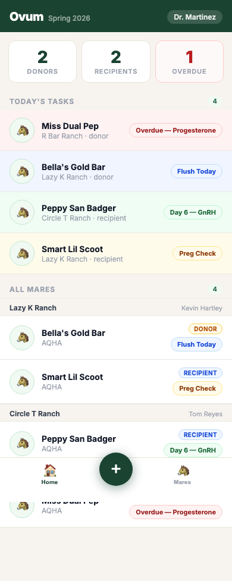
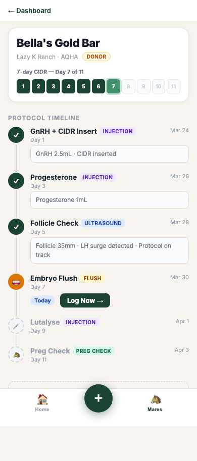
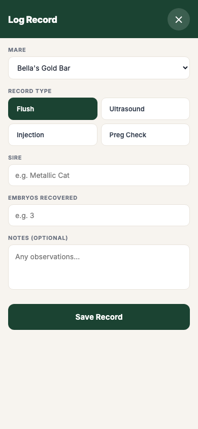

Ovum replaces it. Protocol tracking, flush records, ultrasounds, and preg checks — logged in seconds from your phone.
Step-by-step flush protocols tracked by hand. One missed injection can cost a full cycle. There's no system catching it.
Embryo grades, recipients, sire data — recorded on paper and never seen again. No way to spot what's working across mares.
Switching between clients means juggling stacks of paper. Nothing is searchable. Nothing is shared. Records get lost.
The dashboard shows all your mares across every ranch, sorted by urgency. Overdue tasks surface first. One tap takes you straight to the record.

Each mare has a full protocol timeline — injections, ultrasounds, flush day, preg check. Completed steps show exactly what was logged. Upcoming steps show what's next.

Tap Log Now, fill in the details — embryo count, grade, disposition, recipient mare — and save. The form pre-fills from the protocol so you're never starting from scratch.

We're talking to vets before we build the full version. If you do embryo transfers, we want 15 minutes of your time.
Request Early Access →